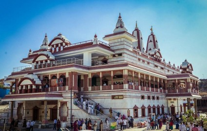
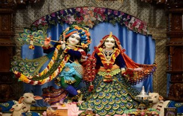
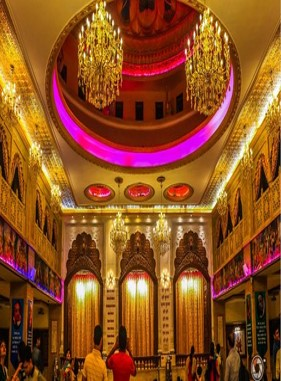

ISKCON New Vedic Cultural Center (NVCC) or ISKCON Pune is an ISKCON temple of Radha-Krishna located in Kondhwa about 12 kilometres (7.5 mi) south of Pune. It was opened in 2013. It is the largest temple in the Pune. The temple complex is built on 6 acres and it took seven years for construction. It took 40 Crore rupees to construct the temple funded by the Iskcon temple in Camp and devotees. The temple was inaugurated by President Pranab Mukherjee in 2013. The temple complex has two temples- the main Radha Krishna temple and the Venkateswara (Balaji) temple. The Radhakrishna temple is built in North Indian architecture style using red stone and marble while the Venkateswara temple is built in South Indian architecture style (Similar to Balaji temple in Tirumala) using Kota stone. The temple offers daily classes on Bhagwad Gita and Srimad Bhagavatam.
Timings: 04:30 AM - 08:45 PM


